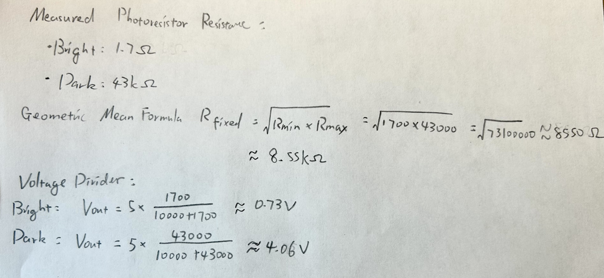
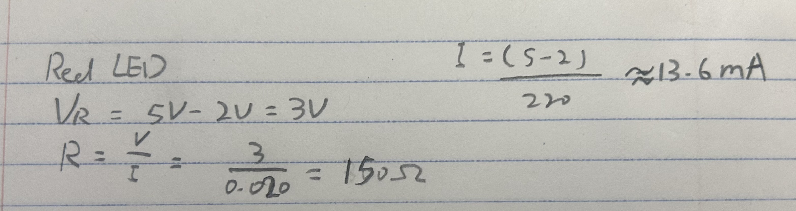
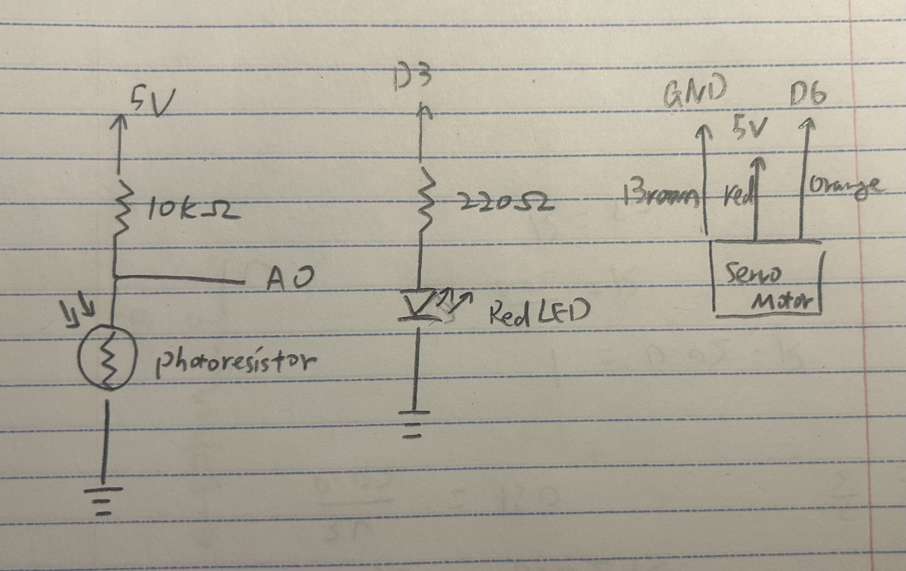
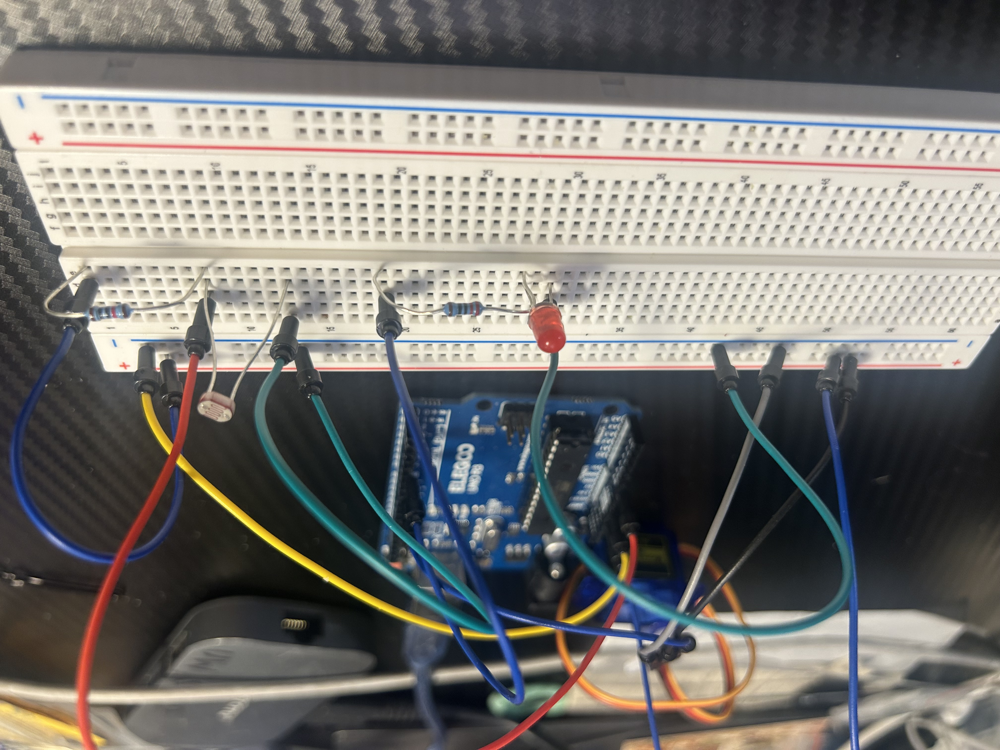
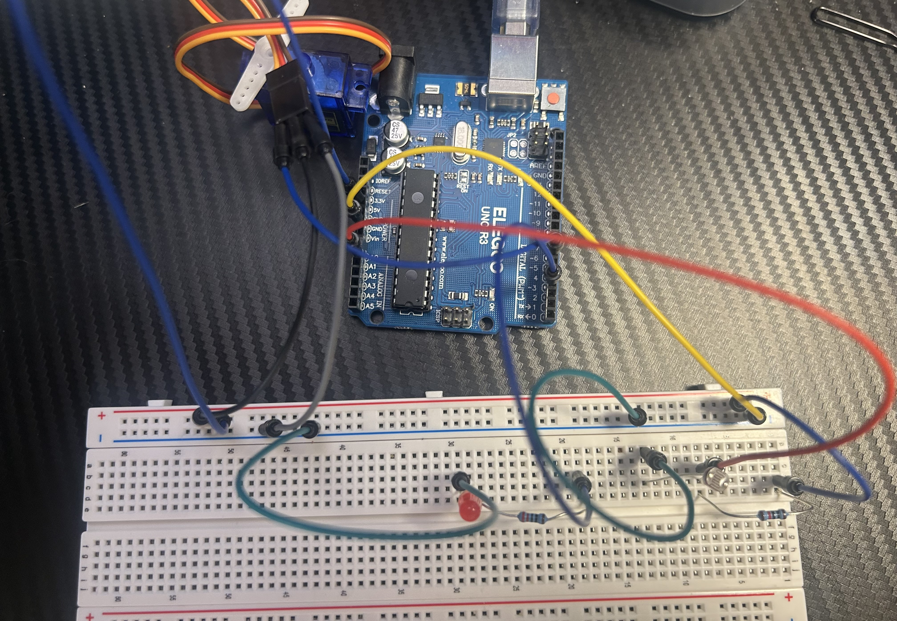
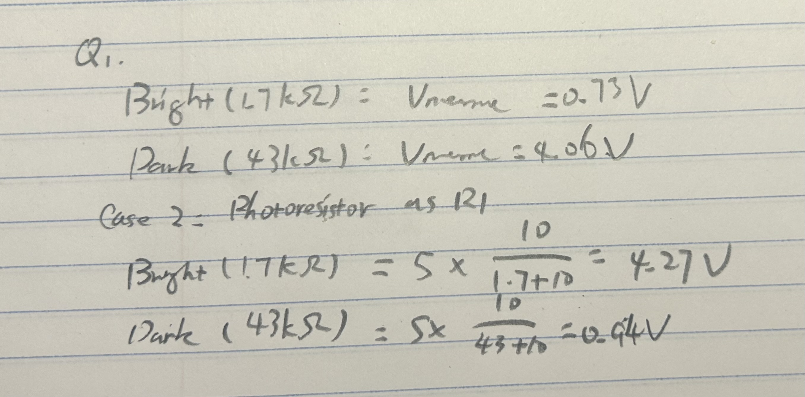
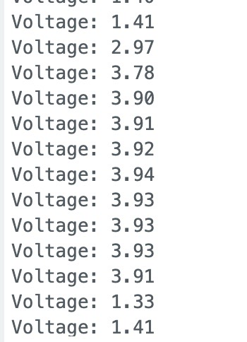
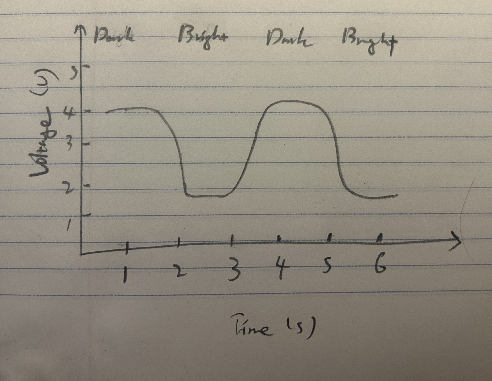

For this assignment, I created an automatic curtain system using a photoresistor, an LED, and a servo motor. The LED changes brightness based on the amount of light detected. When it gets dark, the servo rotates to close the curtain, and when it gets bright, the servo rotates to the oppsite to open it.





I used a photoresistor and a 10k Ohm resistor to create a voltage divider. The 10k Ohm resistor is connected to 5V, and the photoresistor is connected to GND, with A0 connected between them. I chose 10k Ohms based on the photoresistor's resistance in bright and dark conditions. The red LED is connected to PWM pin 3 with a 220 Ohm resistor to limit the current. I chose 220 Ohms to keep the current below 20mA. The servo motor is connected to pin 6 for its signal, and to 5V and GND for power.
// Include the library for controlling the servo
#include
// Create a servo object
Servo curtain;
// Set up the Arduino
void setup() {
// Start serial communication
Serial.begin(9600);
// Set the LED pin as output
pinMode(3, OUTPUT);
// Connect the servo to pin 6
curtain.attach(6);
}
// Read light and control the outputs
void loop() {
// Read the photoresistor voltage
int light = analogRead(A0);
// Convert the reading to LED brightness
int brightness = map(light, 0, 1023, 255, 0);
// Change the LED brightness
analogWrite(3, brightness);
// Close the curtain when it is dark
if (light > 600) {
// Rotate the servo to the closed position
curtain.write(180);
}
// Open the curtain when it is bright
if (light < 300) {
// Rotate the servo to the open position
curtain.write(0);
}
// Print the sensor reading
Serial.println(light);
// Wait before reading again
delay(200);
}

When I cover the photoresistor, its resistance increases and the voltage measured at A0 becomes higher. The LED becomes dimmer, and the servo rotates to 180 degrees to represent closing the curtain. When more light reaches the photoresistor, the LED becomes brighter and the servo rotates to 0 degrees to open the curtain. Between the two thresholds, the servo stays in its current position.

Yes, the photoresistor can be either R1 or R2. In my current circuit, the photoresistor is R2, giving approximately 0.73V in bright light and 4.06V in darkness. If the photoresistor were R1 instead, the voltage would be approximately 4.27V in bright light and 0.94V in darkness. Both configurations work, but the relationship between light intensity and the measured voltage is reversed.


I measured the voltage at A0 using the Arduino's analogRead() and Serial Monitor. The voltage was around 1.3V when the photoresistor was exposed to light and increased to around 3.9V when I covered it. After removing my hand, the voltage dropped back to around 1.3V. This happens because the photoresistor's resistance increases in darkness, causing the measured voltage to increase in my voltage divider. The time intervals in the graph are estimated from the 200 ms delay in my code.
Currently, analogRead() uses a 10-bit ADC with a range of 0 to 1023, while analogWrite() uses 8-bit PWM with a range of 0 to 255. If the ADC were 16-bit and the PWM were 10-bit, the input range would change to 0 to 65535 and the output range would change to 0 to 1023. Since the photoresistor is connected as R2, the sensor reading increases when it gets darker. I would keep the output range reversed so the LED becomes dimmer in darkness. The updated code would be: int brightness = map(light, 0, 65535, 1023, 0);